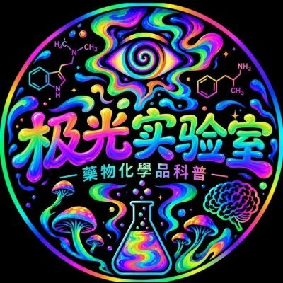

Exp cat
@bui_tu46916
@JiGuang_Lab 你是鸡哥吗

极光实验室2026
@JiGuang_Lab
药圈战争，2026.9.13
沐雨:不知道死没死，我觉得寒参与了死的可能性不大，就算活着，也是光杆司令
后藤:波奇沙不似，但可以让他滚蛋，荣行健真因为嗑药被扭转过
公子:没兴趣
爱德华:我方没出征，沉迷女色死了
三琦:珍爱生命，远离瘟疫，和他在一起等着尿检
Mercy:完蛋货和彩加一样，只是比彩加好一点 https://t.co/mS0xOc0LQM